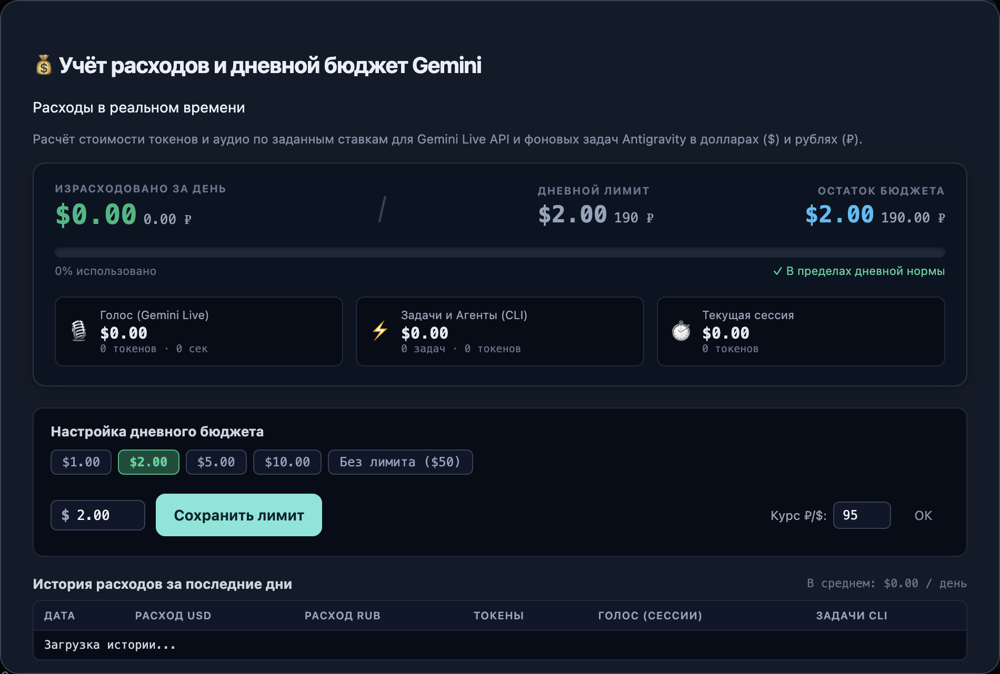

JARVIS / МУЛЬТИМОДАЛЬНЫЙ ИИ-АССИСТЕНТ ДЛЯ MAC
Ассистент, который разговаривает и выполняет задачи
Приложение для macOS · 128 автоматических тестов пройдены

01 / ЗАДАЧА
Соединить разговор с реальными действиями на компьютере
Обычный диалог с нейросетью заканчивается ответом, после которого пользователь сам переключается между редактором, браузером и другими программами. Контекст проекта, повторяемые команды и результаты приходится собирать отдельно.
Задача JARVIS — создать персонального ассистента, который не только отвечает, но и помогает выполнять работу: получает контекст через голос, текст и изображения, передаёт задания исполнителям, взаимодействует с приложениями и сохраняет полезные знания для следующих обращений.
02 / ВОЗМОЖНОСТИ
От разговора до выполненной задачи

03 / ИНЖЕНЕРИЯ
Решения, которые связывают систему воедино
04 / ИНТЕРФЕЙС
Инструменты для повседневной работы




05 / РЕЗУЛЬТАТ
Единое рабочее пространство для ИИ и автоматизации
JARVIS соединяет обсуждение задачи, выполнение, проверку и повторное использование результата. Вместо набора отдельных чатов и скриптов доступны общий интерфейс, специализированные исполнители, память проектов и библиотека сценариев.
Приложение можно использовать в полном окне или свернуть в плавающую капсулу. Локальные инструменты и хранилище работают на Mac; голосовой диалог и агентные задания используют внешние ИИ-сервисы.

Проверка работоспособности
При подготовке кейса пройдены все 128 автоматических тестов: голосовые состояния, очередь задач, резервные подключения, навыки, память, планировщик, бюджет, диктовка, браузерные и визуальные инструменты.
В отдельном экземпляре дополнительно проверены сохранение заметки и памяти специалиста, создание и успешный запуск безопасного навыка, создание напоминания и переключение в капсулу. Личная история, ключи и рабочие заметки не использовались.
Скриншоты показывают интерфейс и локальные сценарии; они не изображают повторную проверку всех голосовых и визуальных функций через живые API. Политики подтверждения снижают риск нежелательных действий, но не являются системной изоляцией исполнителя.
06 / ТЕХНОЛОГИИ